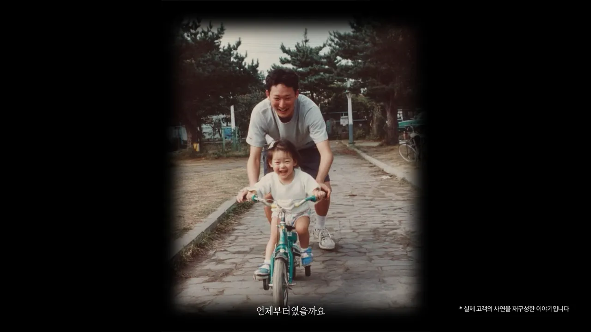
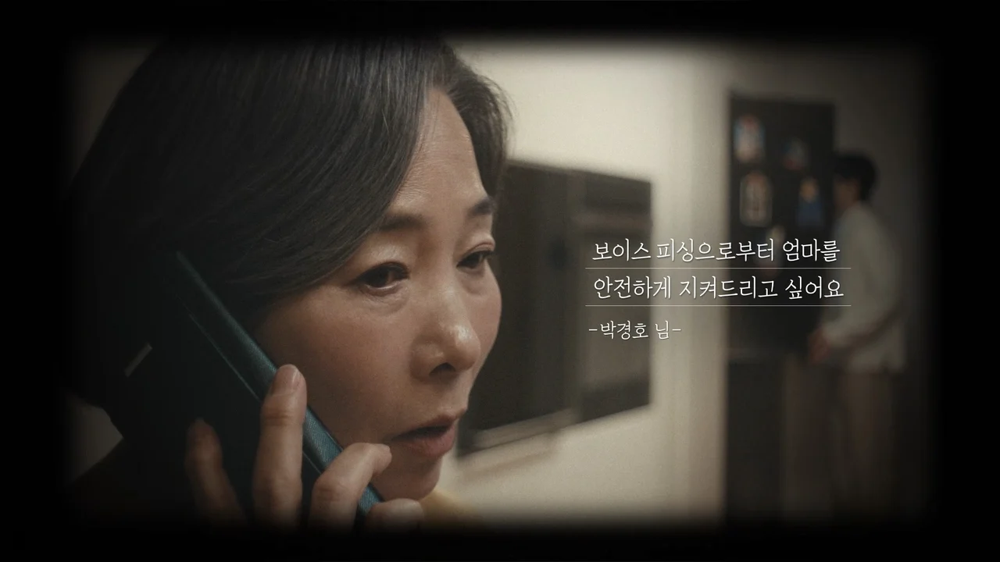

hize
Home
About
Work
Contact
← Work
아리수
My Soul Water
TVCF
아리수
Play ▶
아리수 — My Soul Water
Client
서울아리수본부
Agency
CJ ENM
Production
hize
Director
Park jinyong
Category
TVCF
Awards
2024 공공브랜드 대상 최우수상
2024 올해의 광고 PR상 동상
← Prev

유플러스
딸의 낯선 목소리
Next →

유플러스
유플러스에 도착한 당신의 이야기
All work
Close ✕
Open ↗